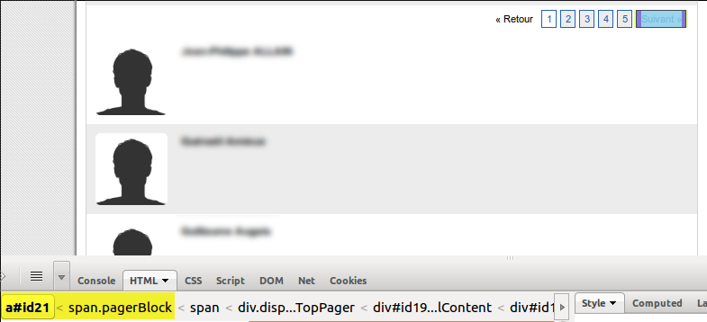
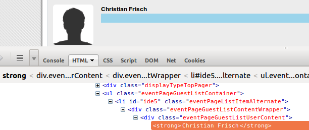
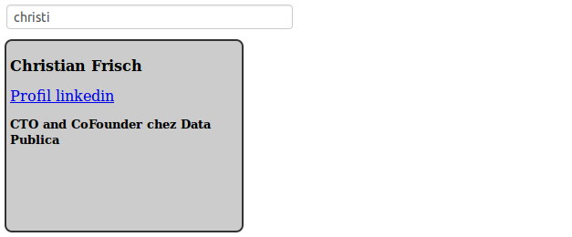

Scrapython
Gratter la toile avec Python
Une présentation @samuelcharron / Data Publica.http://datapublica.github.io/scrapython
Contenu de la présentation
Scrapathon ?
⇩
Web Crawling 
- Web: données peu structurées
- Structure: texte, liens entre pages, structure visuelle
- Utilisation: lecture, moteur de recherche textuel
- Pas de connaissance du site nécessaire, suivi des liens à l'aveugle
Web Scraping
- Structure cachée: souvent une base de données derrière un site
- Une page: un fragment de cette base de données
- Reconstituer la base de données à partir du site entier
- Utilisation: croisement de données, moteur de recherche structuré, ...
- Fortement lié à un site: extraction spécifique
⚒Outils⚒
| ☁Internet | ⇅téléchargement | 🔤chaîne de caractères | 🌲 document (DOM) | |||
| 📄 | ⇢ | ⇅ | ⇢ | "<html>" |
⇢ | <html> |
Scrapy ?
⇩
Scrapy 1/2
- Scrapy est un cadriciel1 orienté gratouillage2
- Deux composants à définir:
- Une araignée3 suivant les liens du site
- Des extracteurs de données
1 Framework
2 Scraping
3 Spider
Scrapy 2/2
- Configurable par de nombreux intergiciels1:
- Agent d'utilisateur3
- Compression HTTP
- Ainsi que par de la configuration globale
- Profondeur d'exploration
- Temporisation des requêtes
1 Middlewares
2 Cookies
3 User Agent
Scrapy — Installation
Installer scrapy:pip install scrapy
# créer un projet scrapy
# Un projet scrapy peut contenir plusieurs araignées
scrapy startproject mon_projet
cd mon_projet
# créer une araignée
scrapy genspider -t basic my_spider mon.domaine.com
# lancer l'araignée
scrapy runspider mon_projet/spiders/my_spider.py
Scrapy — Première araignée
from scrapy.contrib.spiders import CrawlSpider
from scrapy.contrib.linkextractors.sgml import SgmlLinkExtractor
from scrapy.contrib.spiders import Rule
class WikiAraignee(CrawlSpider):
name = 'wiki1'
# Domaines autorisés lors du parcours du site.
# Les URLs sortant de ce domaines sont supprimées.
allowed_domains = ['fr.wikipedia.org']
start_urls = ['http://fr.wikipedia.org/wiki/Araignée']
# Regles de suivi de lien
rules = [
Rule(SgmlLinkExtractor(),
follow=False,
process_links=lambda links: links[:5]
)]
Scrapy — XPaths1/2
- Une syntaxe permettant de naviguer dans les éléments d'un document HTML.
- Déplacements relatifs
- Point de départ: un nœud virtuel situés au dessus du nœud <html>
<html>
<body>
<ul>
<li class='c1'>Premier élément</li>
<li>Deuxième élément</li>
<li class='c1'>Troisième élément</li>
</ul>
</body>
</html>
Scrapy — XPaths2/2
<html>
<body>
<ul>
<li class='c1'>Premier élément</li>
<li>Deuxième élément</li>
<li class='c1'>Troisième élément</li>
</ul>
</body>
</html>
| Sélecteur | Description | Résultat |
| /html | Les nœuds de type <html> | [<html>] |
| /html/body | les fils des nœuds de type <html> qui ont pour type <body> | [<body>] |
| /html//li[2] | le deuxième descendant de type <li> des nœuds de type <html> | [Deuxième élément] |
| /html//li[@class='c1'] | les descendants des nœuds de type <html> ayant un attribut «class» ayant comme valeur «c1» | [Premier élément, Troisième élément] |
Scrapy — Shell
- Interpreteur python prêt à l'emploi
- Permettant de tester des extractions.
scrapy shell xpath.html # Accepte un fichier ou une URL
[...]
# hxs est une variable contenant le fichier ou l'URL téléchargée)
# elle permet de faire des requêtes XPath sur ce contenu
>>> hxs.select("/html/body//li")
[<HtmlXPathSelector xpath='/html/body//li' data=u'<li class="c1">Premier […]
Scrapy — Deuxième araignée
from scrapy.contrib.spiders import CrawlSpider
from scrapy.contrib.linkextractors.sgml import SgmlLinkExtractor
from scrapy.contrib.spiders import Rule
from scrapy.selector import HtmlXPathSelector
from scrapy.item import Item, Field
class WikiItem(Item):
title = Field()
class WikiAraignee(CrawlSpider):
name = 'wiki2'
allowed_domains = ['fr.wikipedia.org']
start_urls = ['http://fr.wikipedia.org/wiki/Araignée']
rules = [
Rule(SgmlLinkExtractor(),
callback='parse_page',
follow=False,
process_links=lambda links: links[:5],
)]
def parse_page(self, response):
hxs = HtmlXPathSelector(response)
title = hxs.select('//title/text()').extract()
return WikiItem(title=title)
Scrapy — Résultat
scrapy runspider scrapy_example/spiders/wiki2.py -o links.json --loglevel INFO
{"title": ["Araign\u00e9e - Wikip\u00e9dia"]}
{"title": ["Classification scientifique des esp\u00e8ces - Wikip\u00e9dia"]}
{"title": ["Araign\u00e9e (homonymie) - Wikip\u00e9dia"]}
{"title": ["Aide:Redirection - Wikip\u00e9dia"]}
{"title": ["Araneae - Wikip\u00e9dia"]}
Requests ?
⇩
Requests
Exemple d'utilisation de Requests
import requests
url = "http://fr.wikipedia.org/wiki/Araignée"
resultat = requests.get(url)
resultat.status_code
200resultat.text[:104]
<!DOCTYPE html>
<html lang="fr" dir="ltr" class="client-nojs">
<head>
<title>Araneae - Wikipédia</title>PyQuery ?
⇩
PyQuery
Sélecteurs CSS
| Sélecteur | Description | Équivalent XPath |
| html | Les nœuds de type <html> | //html |
| html > body | les files des nœuds de type <html> qui ont pour type <body> | //html/body |
| html li:nth-of-type(2) | le deuxième descendant de type <li> des nœuds de type <html> | /html//li[2] |
| html li.c1 | les descendants des nœuds de type <html> ayant un attribut «class» ayant comme valeur «c1» | /html//li[@class='c1'] |
| li#c1 | le nœud de type <li> ayant un attribut «id» ayant comme valeur «c1» | //li[@id='c1'] |
Exemple d'utilisation de PyQuery
from pyquery import PyQuery as pq
doc = """
<html><body>
<ul class='container'>
<li id='li-1'>premier li</li>
<li id='li-2'>deuxieme li</li>
</ul>
</body></html>
"""
# Créer un document à partir d'une chaîne
selecteur = pq(doc)
# Sélectionner des éléments
selecteur("ul.container").text()
premier li deuxieme liselecteur("#li-1").text()
premier liRequests + PyQuery !
⇩
Requests + PyQuery 1/2
import json
from pyquery import PyQuery as pq
import requests
url = u"http://fr.wikipedia.org/wiki/Araignée"
resultat = requests.get(url)
document = pq(resultat.text).make_links_absolute(url)
# Sélectionner des éléments
json.dumps([a.attr.href for a in document("a").items()][:5], indent=2)
[
"http://fr.wikipedia.org/wiki/Araign\u00c3\u00a9e",
"http://fr.wikipedia.org/wiki/Araign\u00c3\u00a9e#mw-navigation",
"http://fr.wikipedia.org/wiki/Araign\u00c3\u00a9e#p-search",
"http://fr.wikipedia.org/wiki/Sp%C3%A9cial:Matrice_des_sites",
"http://fr.wiktionary.org/wiki/Special:Recherche/Araign%C3%83%C2%A9e"
]Requests + PyQuery 2/2
import json
from pyquery import PyQuery as pq
import requests
url = u"http://fr.wikipedia.org/wiki/Araignée"
resultat = requests.get(url)
document = pq(resultat.text).make_links_absolute(url)
titles = []
# Sélectionner des éléments
for link in ([a.attr.href for a in document("a").items()][:5]):
document = pq(requests.get(link).content)
titles.append(document("title").text())
json.dumps(titles, indent=2)
[
"Araign\u00c3\u00a9e - Wikip\u00e9dia",
"Araign\u00c3\u00a9e - Wikip\u00e9dia",
"Araign\u00c3\u00a9e - Wikip\u00e9dia",
"Liste des wikis de Wikimedia Foundation - Wikip\u00e9dia",
"R\u00e9sultats de recherche pour \u00ab Araign\u00c3\u00a9e \u00bb - Wiktionnaire"
]Un exemple concret
⇩
Projet "Qui fait quoi?"
Objectif: Extraire des informations professionnelles des participants au scrapathon.- amiando.com pour la liste des participants
- linkedin pour les infos professionnelles
Amiando — Les liens
<a id="id21" href="#"
onclick="var wcall=wicketAjaxGet('/eventxml/wicket.xml;jsessionid=...', ..."
>Suivant »</a>
Suivre les liens
import re
import urlparse
from scrapy.spider import BaseSpider
from scrapy.selector import HtmlXPathSelector
from scrapy.http import Request
class QuiFaitQuoi(BaseSpider):
name = 'amiando'
allowed_domains = ['fr.amiando.com']
start_urls = ['http://fr.amiando.com/scrapathon.html?page=961570']
def parse(self, response):
hxs = HtmlXPathSelector(response)
# Extract next link
links = hxs.select("//span[@class='pagerBlock'][1]//a")
links = [a.select("@onclick")[0].extract()
for a in links
if "Suivant" in a.extract()]
if len(links) > 0:
next_link = re.search("'(.*?)'", links[0])
next_link = next_link.group(1)
next_link = urlparse.urljoin(response.url, next_link)
yield Request(next_link)
Amiando — Les gens
Extraire l'information
import re
import urlparse
from scrapy.spider import BaseSpider
from scrapy.selector import HtmlXPathSelector
from scrapy.http import Request
from scrapy.item import Item, Field
class People(Item):
name = Field()
class QuiFaitQuoi(BaseSpider):
name = 'amiando2'
allowed_domains = ['fr.amiando.com']
start_urls = ['http://fr.amiando.com/scrapathon.html?page=961570']
def parse(self, response):
hxs = HtmlXPathSelector(response)
# Extract next link
links = hxs.select("//span[@class='pagerBlock'][1]//a")
links = [a.select("@onclick")[0].extract()
for a in links
if "Suivant" in a.extract()]
if len(links) > 0:
next_link = re.search("'(.*?)'", links[0])
next_link = next_link.group(1)
next_link = urlparse.urljoin(response.url, next_link)
yield Request(next_link)
for p in hxs.select("//ul[@class='eventPageGuestListContainer']/"
"li//strong/text()"):
yield People(name=p.extract())
Lancer scrapy
scrapy runspider scrapy_example/spiders/amiando2.py -o people.csv -t csv -L INFO
Cela va créer un fichier «people.csv» contenant un nom par ligne.
Croiser l'information
import csv
from pyquery import PyQuery as pq
import json
import requests
# Lit les données
people = csv.reader(open("scrapy/people.csv"))
next(people) # Passer l'en-tête
data = []
for full_name, in people:
# Coupe (arbitrairement) le prenom au premier espace
prenom, nom = full_name.split(" ", 1)
url = "http://fr.linkedin.com/pub/dir/?first=%s&last=%s" % (prenom, nom)
resultat = requests.get(url)
document = pq(resultat.text).make_links_absolute(url)
link = document("#result-set h2 strong a").attr.href
# Améliore l'extraction en ne prenant que quelqu'un bossant en France
vcards = document("#result-set li.vcard")
for vcard in vcards.items():
if "france" in vcard(".location").text().lower():
link = vcard("h2 strong a").attr.href
break
boulot, image = None, None
if link:
profil = requests.get(link)
document = pq(profil.text).make_links_absolute(link)
boulot = [p.text().strip() for p in document(".current li").items()]
image = document("#profile-picture img").attr.src
data.append({"name": full_name, "boulot": boulot,
"image": image, "url": link})
json.dump(data, open("qui_fait_quoi.json", "w"), indent=2)
Resultat
Démo
Liens à visiter d'urgence
Choses à faire d'urgence
- ✐Gazouiller #scrapathon